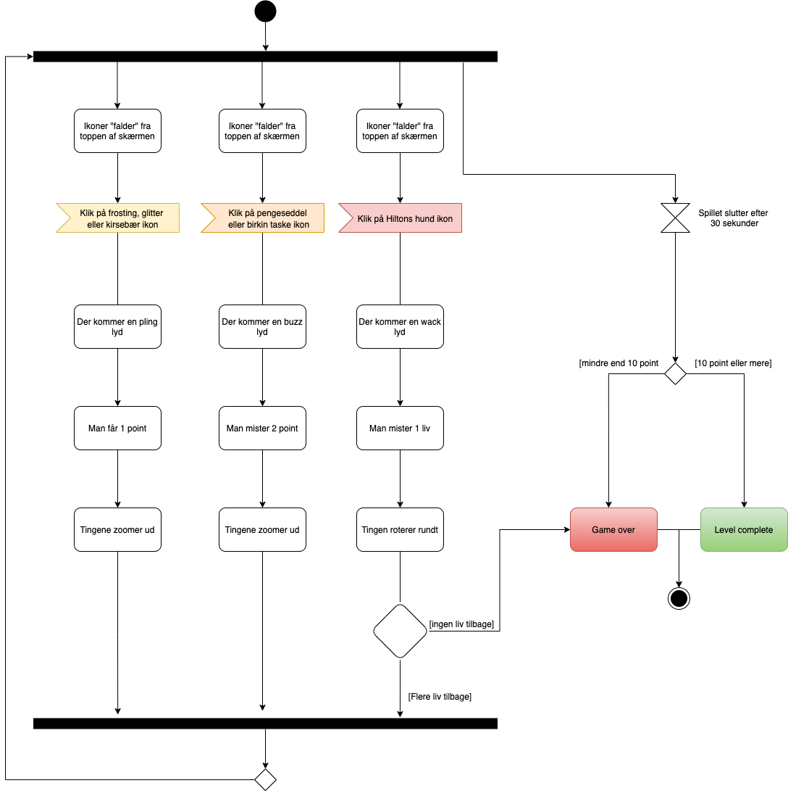

Min dokumentations side for spillet
Spil koncept
Cooking with paris
Mit spil går ud på at hjælpe Paris Hilton med at bage hendes favorit pink glitter kage. For at hjælpe hende skal man fange ingredienserne til kagen, ved at klikke på dem. Dog vil der komme både gode og dårlige ingredienser faldende fra toppen af skærmen. Så man skal være varsom med hvilke ingredienser man vælger at klikke på.
Stil-inspiration
South Park
Jeg har taget udgangspunkt i South Park stilen, da jeg følte at denne stil ville kunne bringe noget humor ind i spillet helt naturligt. Med South Park stilen har jeg haft fokus på former. South Park tager ofte brug af cirkler og ovaler, samt symetri på hver side af karakteren i serien. Dog når de har kendte mennesker med i serien, altså celebrities, så har de det med at give den mere gas på. Her er der stadig fokus på forskelllige geometriske former, dog er det vigtigt med asymteri hos de kendte personer for at give dem helt bestemte karaktertærk.
Aktivitetsdiagram

Skitser til spillet
3 af mine bedste skitser


Farver brugt i spillet
Valg af Font
Hoefter text (black)